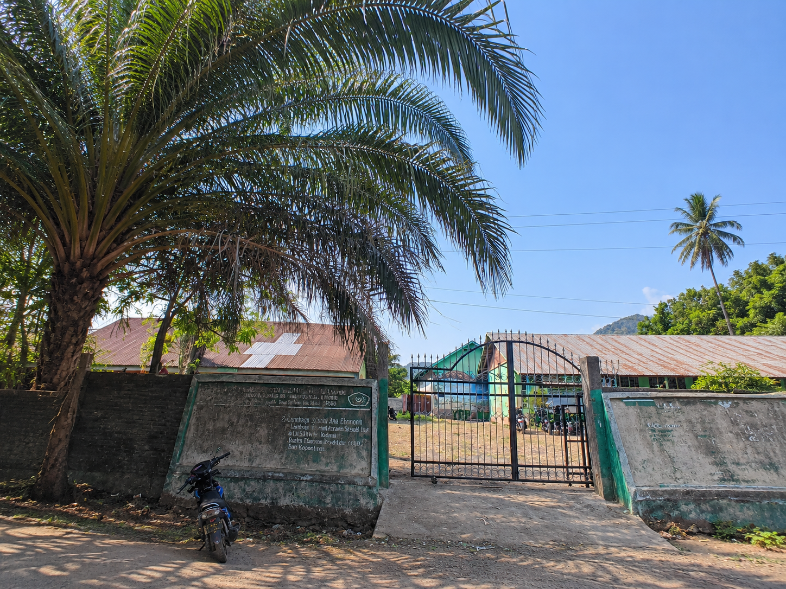
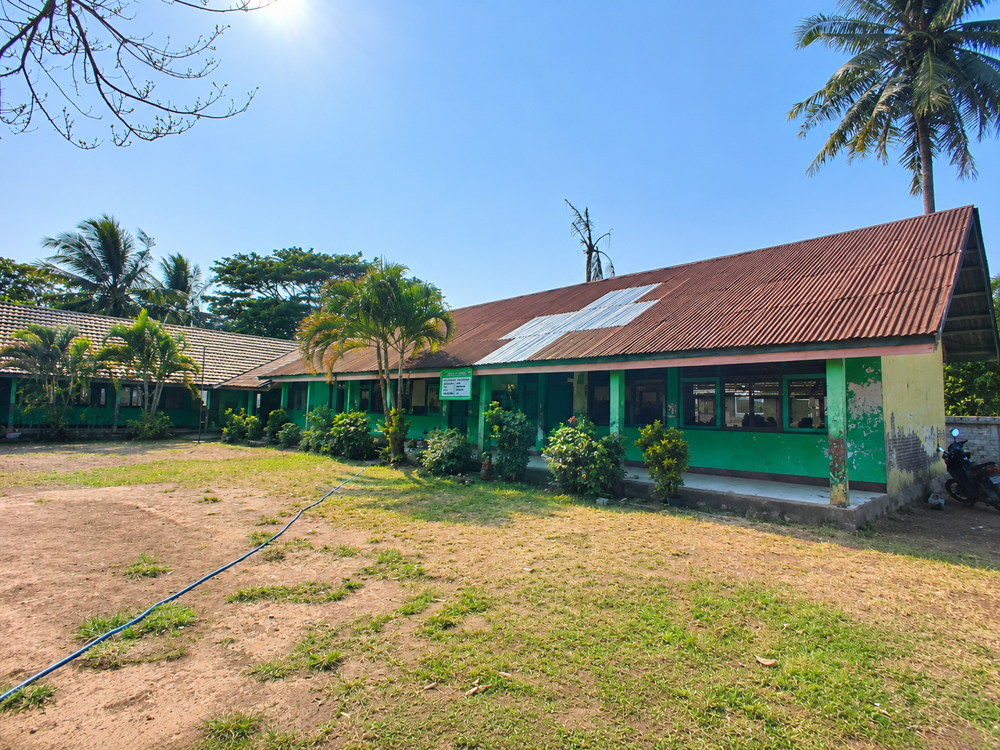
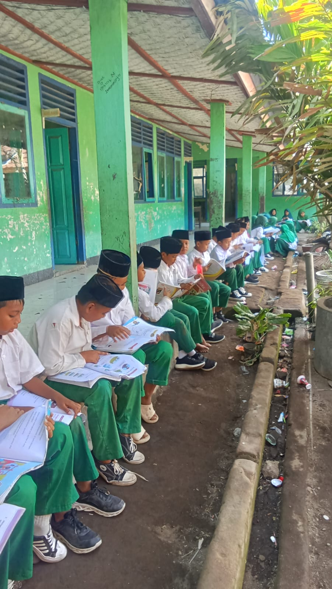
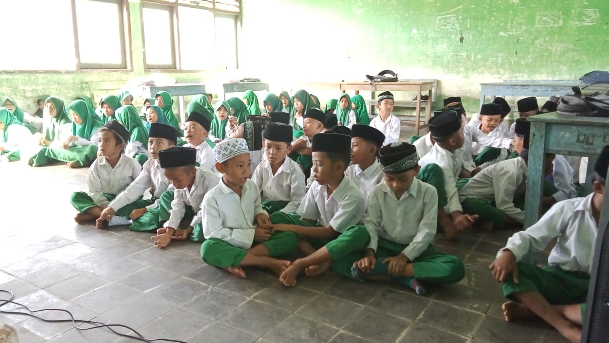
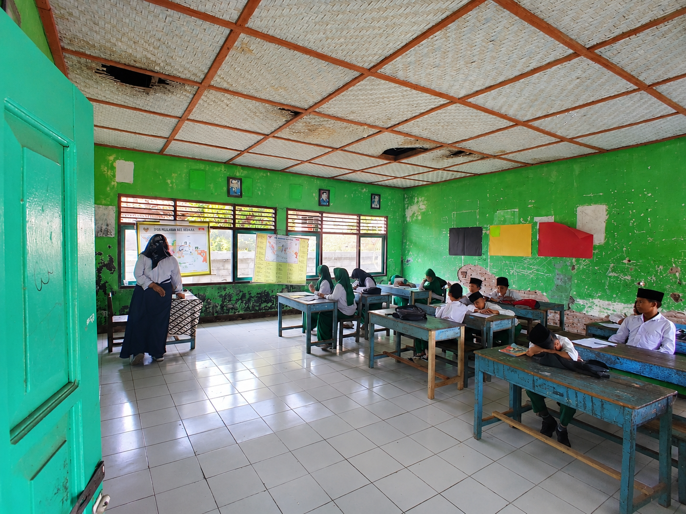

16 AGUSTUS 1991
01
Awal berdirinya madrasah
Gagasan TGH Zinuraini, Sahir, dan Muhammad Thahir melahirkan sebuah lembaga pendidikan Islam untuk masyarakat Kadindi dan sekitarnya.
Kisah sebuah madrasah yang tumbuh dari kepedulian, keikhlasan, dan cita-cita untuk menerangi masa depan anak-anak Kadindi.
Sebuah cita-cita, sebuah amanah
MIS NW Kadindi merupakan lembaga pendidikan dasar Islam yang hadir untuk menumbuhkan ilmu pengetahuan, keimanan, dan akhlak mulia bagi generasi muda di Kadindi dan sekitarnya.
Madrasah ini secara resmi didirikan pada 16 Agustus 1991, atas inisiatif TGH Zinuraini, Sahir, dan Muhammad Thahir. Perjuangan mereka berangkat dari kepedulian terhadap pentingnya pendidikan yang memadukan ilmu pengetahuan umum dengan nilai-nilai Islam.
Tanah wakaf dari Nurate dan Lalu Yusuf menjadi bagian penting dari berdirinya madrasah. Wakaf tersebut bukan sekadar tempat berpijak sebuah bangunan, tetapi juga landasan bagi tumbuhnya harapan dan masa depan anak-anak.
Pendidikan adalah amanah bersama: menanam ilmu hari ini, agar tumbuh kebaikan untuk generasi esok.

Perjalanan dari masa ke masa
Perjalanan MIS NW Kadindi adalah kisah tentang pengabdian, pembelajaran, dan semangat untuk terus bertumbuh.
Gagasan TGH Zinuraini, Sahir, dan Muhammad Thahir melahirkan sebuah lembaga pendidikan Islam untuk masyarakat Kadindi dan sekitarnya.
Wakaf dari Nurate dan Lalu Yusuf menjadi kontribusi berharga bagi tempat belajar dan tumbuhnya generasi penerus.
Madrasah terus berupaya meningkatkan tata kelola, kualitas pembelajaran, kompetensi pendidik, serta sarana pendukung pendidikan.
Menyiapkan peserta didik yang berilmu, beriman, mandiri, bertanggung jawab, dan mampu memberi manfaat bagi masyarakat.
Catatan: linimasa ini merangkum tonggak yang disebutkan dalam naskah sejarah; tahun untuk tahap perkembangan berikutnya dapat ditambahkan setelah data resmi tersedia.
Lebih dari ruang kelas
Di MIS NW Kadindi, pendidikan diharapkan tidak berhenti pada membaca, menulis, dan berhitung. Anak-anak juga dibimbing untuk membangun karakter dan membawa nilai-nilai kebaikan ke dalam kehidupan sehari-hari.
Mengenal cita-cita madrasahMendorong rasa ingin tahu, keterampilan, kreativitas, dan semangat belajar sepanjang hayat.
Menanamkan nilai keislaman, kejujuran, kedisiplinan, tanggung jawab, dan rasa hormat.
Menguatkan kerja sama antara guru, keluarga, masyarakat, dan seluruh warga madrasah.
Mengenalkan potensi alam Kadindi dan menumbuhkan kepedulian untuk menjaganya.

Tumbuh di bumi Kadindi
Berada di Dusun Pusaka, Desa Kadindi, Kecamatan Pekat, Kabupaten Dompu, di bawah kawasan Gunung Kadindi, madrasah tumbuh di tengah kehidupan masyarakat yang dekat dengan persawahan, perkebunan, dan kekayaan alam setempat.
Potret kehidupan madrasah
Setiap sudut menyimpan cerita. Setiap kegiatan belajar adalah bagian dari perjalanan panjang membangun masa depan.



Melanjutkan amanah
MIS NW Kadindi bukan sekadar tempat menuntut ilmu, melainkan tempat menanam harapan, membangun karakter, dan menyiapkan masa depan.
Semoga madrasah senantiasa diberi kekuatan untuk meningkatkan mutu pendidikan, menjaga nilai-nilai Islam, serta melahirkan generasi yang cerdas, mandiri, berprestasi, dan berakhlak mulia. Semoga setiap ilmu yang diajarkan menjadi amal kebaikan dan setiap pengabdian membawa keberkahan.